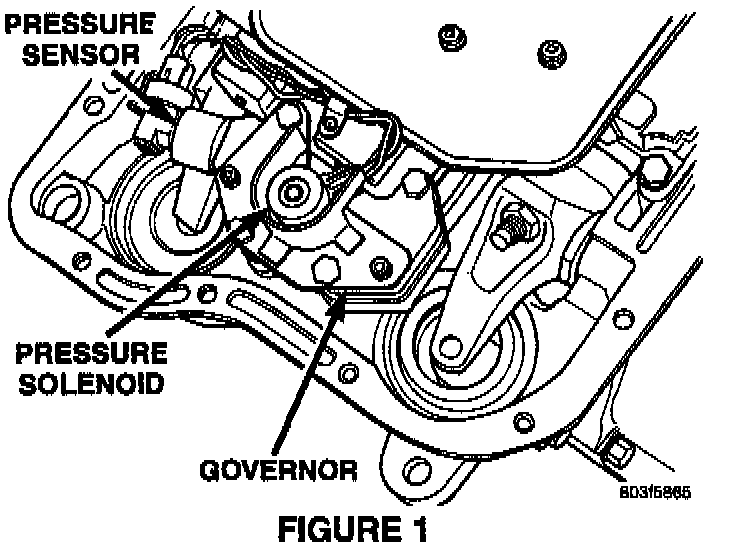

A/T - Engine Bucking/Surging at 5,300 Rpm
NO: 18-19-98GROUP: Driveability
DATE: Apr. 10, 1998
SUBJECT:
Vehicle Bucking During Wide Open Throttle Acceleration
MODELS:
1996 - 1998 (AB) Ram Van
1996 - 1998 (AN) Dakota
1996 - 1998 (BR/BE) Ram Truck
1998 (DN) Durango
1996 - 1998 (ZJ) Grand Cherokee
1996 - 1998 (ZG) Grand Cherokee (International Markets)
NOTE:
THIS INFORMATION APPLIES TO VEHICLES BUILT BEFORE JAN 16, 1998 MDH (0116XX) EQUIPPED WITH GASOLINE ENGINES AND A 42/44/46 OR 47RE TRANSMISSION.
SYMPTOM/CONDITION:
Some vehicles may experience bucking during wide open throttle (WOT) acceleration. The bucking occurs at approximately 5300 RPM. This condition may be caused by reaching the high RPM fuel shut off rev limit before the transmission can shift into the next higher gear and is most likely to occur with high electrical loads (high beams on, heated back lite, heated seats, radio, HVAC blower on MAX etc.). During high current demands, the generator may emit electrical noise that can affect the transmission governor pressure sensor output. If this occurs, the transmission may not shift properly to the next higher gear under (WOT) acceleration conditions and therefore reach the fuel shut off rev limiter. This may be seen most often between the 2-3 shift but can also be experienced between the 1-2 shift.
DIAGNOSIS:
Using the Diagnostic Scan Tool (DRB III(R)) with the appropriate Diagnostic Procedures Manual, verify all engine/transmission systems are functioning as designed. If Diagnostic Trouble Codes (DTC's) are present, record them on the repair order and repair as necessary before proceeding further with this bulletin.
NOTE:
ONLY PERFORM THE FOLLOWING PROCEDURE SAFELY ON A HIGHWAY OR ROAD OBEYING ALL POSTED SPEED LIMITS AND LAWS.
Attempt to duplicate the condition by switching on all accessory loads and driving the vehicle with WOT accelerations through a shift sequence to see if the engine will reach the fuel shut off rev limiter before the 2-3 or 1-2 shift is made.
If the bucking condition is experienced at approximately 5300 RPM before making the appropriate upshifts, switch off all electrical loads and repeat the procedure. Repeat the procedure with the electrical loads on and off a second time. If the bucking occurs with the electrical loads on and does not occur with the loads off, perform the Repair Procedure.
PARTS REQUIRED:
1 56041403AA Sensor, Governor Pressure
REPAIR PROCEDURE:
This bulletin involves installing a newly designed governor pressure sensor.

1. Following the procedures in the applicable service manual, replace the governor pressure sensor with p/n 56041403AA (Figure 1).
2. Check the throttle valve cable adjustment. Make appropriate adjustments, if necessary, following the applicable service manual procedure.
POLICY: Reimbursable within the provisions of the warranty.
TIME ALLOWANCE:
Labor Operation No: 21-96-06-90 1.1 Hrs.
FAILURE CODE: P8 - New Part